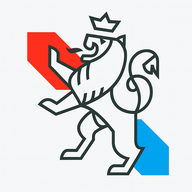
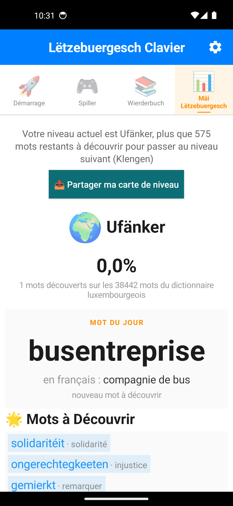
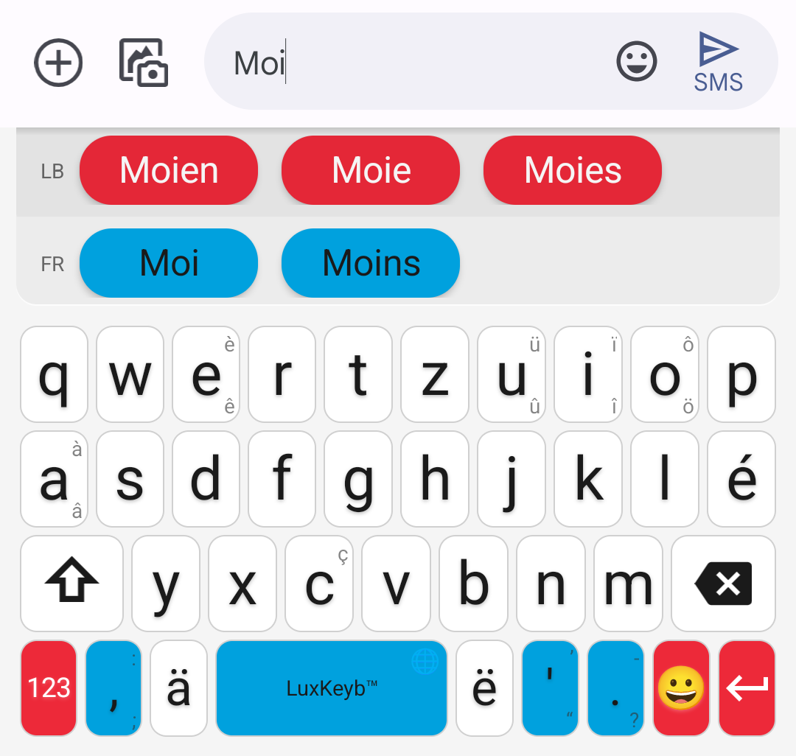
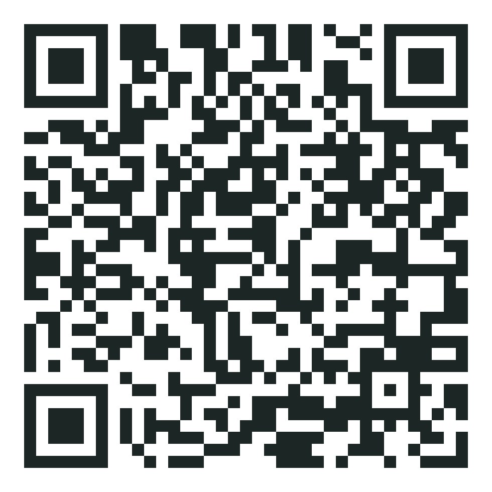
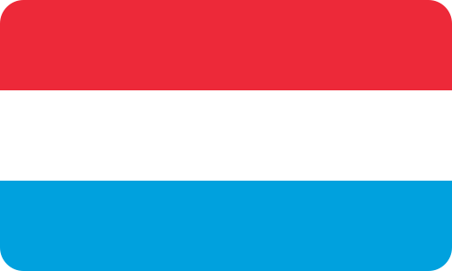

Mir schwätze Lëtzebuergesch — elo schreiwe mir et och.

Votre clavier luxembourgeois,
100 % gratuit


Gratuit·Open source (MIT)·Zéro publicité·100 % hors ligne
📲 Flashez le code, c'est gratuit

Däi Lëtzebuergesch, op dengem Telefon.
